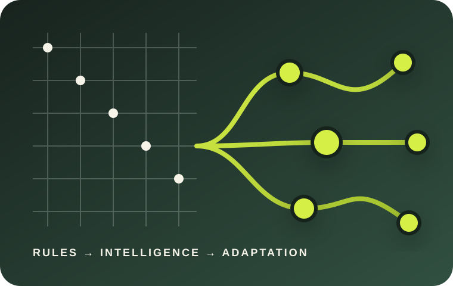
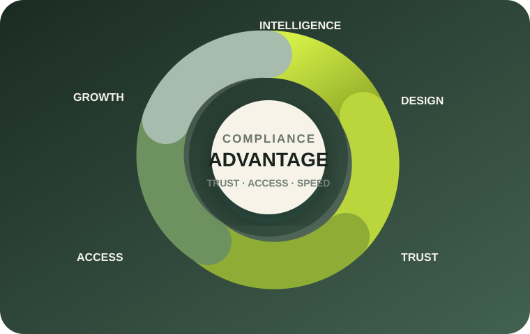
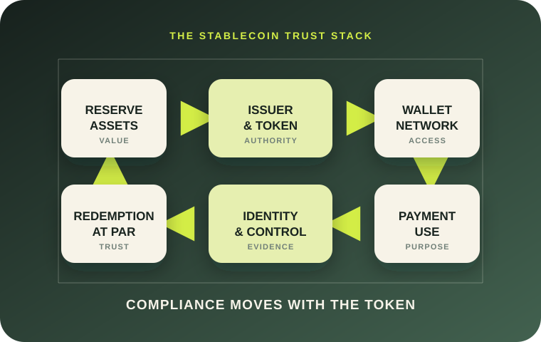
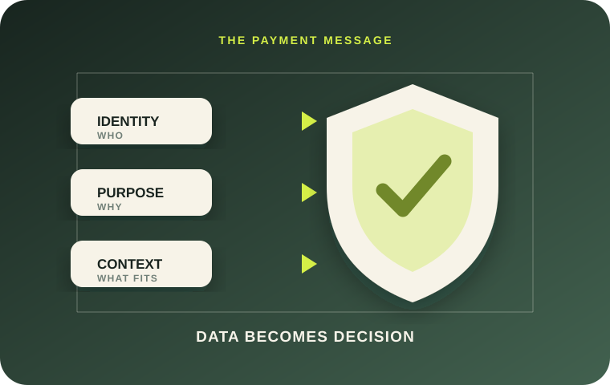
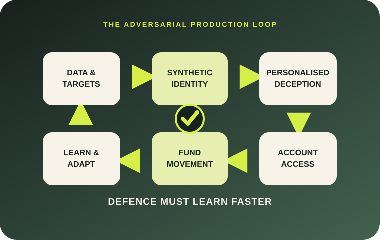
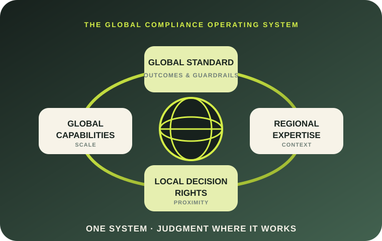
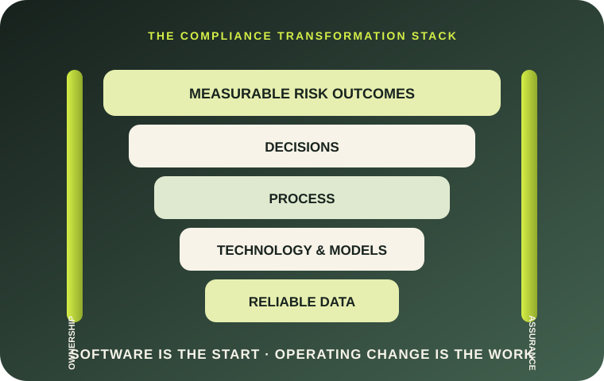
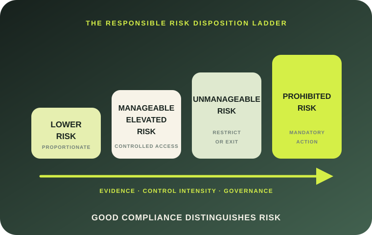

For executives and boards
Make compliance a strategic capability.
Start with the commercial case, board oversight and the decisions that connect trust, innovation and responsible growth.
Begin with The Compliance Advantage →A connected body of work on why compliance must evolve—and what payments and fintech companies gain when it does.
Explore how artificial intelligence, machine learning, continuous monitoring and human accountability can move compliance beyond static rules and periodic risk assessments.
Start with the commercial case, board oversight and the decisions that connect trust, innovation and responsible growth.
Begin with The Compliance Advantage →Explore detection effectiveness, model drift, regulatory intelligence, AI governance and measurable control improvement.
Explore the implementation chapters →Use the maturity model, working tools and 30/60/90-day plans to connect delivery, adoption, ownership and outcomes.
Use the executive toolkit →Volume I explains why static governance must change. Volume II makes the commercial case for compliance as an advantage. Volume III follows trust across the stablecoin lifecycle. Volume IV shows how payment data can become an active control surface. Volume V examines how AI industrialises financial crime. Volume VI places global standards and local judgment in one operating system. Volume VII explains why technology alone is not transformation. Volume VIII closes the series by showing how responsible risk differentiation protects integrity, access and trust.
The complete eight-chapter manuscript, expanded with practical case studies, operating models, governance tools, working templates and 30/60/90-day implementation plans.

How mature compliance creates trust, protects access, improves product design and allows payments and fintech companies to move with greater confidence.

How stablecoins rewire payments, compliance and financial-crime control—and why identity, intelligence and accountability must move with the token.

How payment transparency is becoming enforceable—and how richer, structured data can connect identity, purpose and context to earlier financial-crime decisions.

How AI, deepfakes, synthetic identities and agents are industrialising financial crime—and why financial institutions need controls that learn as quickly as the adversary.

How to build one global standard, place judgment near the customer and keep decisions moving across regions—without sacrificing consistency, control or accountability.

How data readiness, process redesign, model governance, adoption and operating ownership turn technology into better compliance outcomes.

How responsible risk differentiation preserves regulated visibility, supports financial inclusion and protects integrity—while keeping a clear boundary around prohibited and unmanageable risk.

The series is designed to move beyond broad statements about innovation. Each chapter connects a strategic argument to ownership, metrics, escalation, implementation and the day-to-day choices made inside regulated institutions.
Each paper combines the strategic argument with a case study, practical operating model, reusable tools and a matching workshop deck.
Move transaction monitoring beyond alert reduction toward risk coverage, detection effectiveness and governed redesign.
Turn enforcement lessons into applicability assessments, control changes and sustainable remediation.
Monitor and govern data, population, concept and performance drift through clear signals and escalation.
Assess whether governance is reactive, periodic, continuously monitored, adaptive or intelligence-led.
Build AI governance around use-case risk, human oversight, testing, incident response and accountability.
Connect global governance, regional intelligence, product compliance and specialist centers of excellence.
Measure risk coverage, model health, customer friction, adaptability and governance response—not only activity.
Embed compliance into product development, market expansion, risk appetite and executive decisions.
Use the 28-page workbook to score maturity, challenge evidence, define decision rights and leave each working session with an accountable action and reassessment trigger.
The future belongs to institutions that learn, adapt and turn compliance intelligence into better decisions.